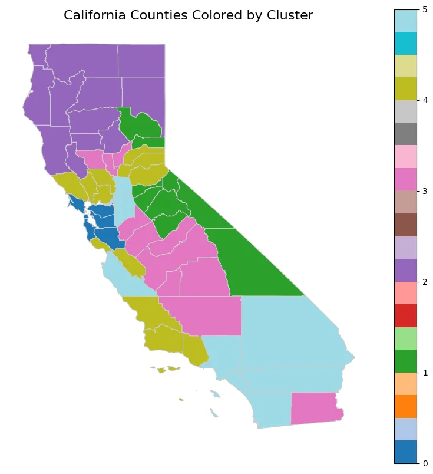

01
Energy systems and the grid
It started as a research question about who adopts distributed energy resources and who does not. It turned into a dataset, then models, then a tool other people could query, and then industry work on the supply chains and programs sitting behind all of it.
Program Operations Intern
ICF
- Embedded with energy-efficiency program teams across the North Central region, building internal tooling and automation against the workflows those teams actually run rather than against a written spec.
- Built an end-to-end call-insights reporting workflow in Python, Power Query, SharePoint, and Power Automate, automating 4 to 5 manual handoffs and saving an estimated 2 to 4 hours per week of reporting work.
- Designed a Bronze/Silver/Gold dimensional data model for Microsoft Fabric with 5+ reusable tables covering premise, contractor, measure, and calendar data, plus an eight-field logging and validation standard for run IDs, pipeline stages, statuses, and errors.
- Built interactive geographic map overlays combining utility, agency, and community-ally context, and assembled a centralized New Homes program playbook spanning startup, operations, audit, outreach, and closeout.
- Presented the internship project showcase to the program team, including which time-savings figures were directional estimates still to be validated against observed usage.
DER Decision Support Platform
React · FastAPI · Python · SQL
Full-stack application for querying, comparing, and visualizing DER adoption across California ZIP codes: REST APIs, a region-centered data model, and retrieval-grounded LLM summaries. The product layer on top of the MITEI research below, built out from an open-ended research question rather than a spec.
Associate Consultant
Ratel Consulting
- Designed and implemented a SQL database organizing 5,000+ EV battery and supply-chain records across cells, production processes, manufacturers, and assembly operations, learning SQL in context on the engagement.
- Cleaned and structured 10 datasets feeding stakeholder reports and Power BI dashboards, and built time-series forecasts for equipment costs.
- Persuaded the team to move recurring analysis out of manual spreadsheets, saving several hours per week. That one was a convincing-people win more than a technical one.
Data Science Researcher
MIT Energy Initiative
- Modeled distributed energy resource adoption across California counties with OLS and Ridge regression, reaching roughly 0.47 to 0.50 R² in selected county-level models, and segmented regions by adoption and infrastructure profile with K-means clustering.
- Built reproducible Python and pandas pipelines to clean, join, normalize, and geographically align 10,000+ records across about 1,700 ZIP-code regions. Parts of the pipeline entered a broader MIT-led grid-simulation platform, and the county-selection logic became the basis for scenarios other researchers used.
- Conducted geospatial analysis of DER access disparities, constructing per-capita and region-normalized metrics so communities of very different sizes could be compared fairly.
- Handled missing data and imputation across fragmented government and industry sources, and ran model diagnostics on assumptions, missing-data patterns, and aggregation effects to keep comparisons from misleading readers.
